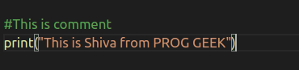

What is Python ?
Python is a simple and easy to understand langauge which feels like reading simple english.The psuedo code nature of python makes it easy to learn and understandable by beginners.It was created by Guido van Rossum during 1985- 1990. Like Perl, Python source code is also available under the GNU General Public License (GPL). This tutorial gives enough understanding on Python programming language.
Features of Python:
==> Easy To Understand-Python has few keywords, simple structure, and a clearly defined syntax. This allows the student to pick up the language quickly.==> Free and Open Source - It is free and it is free of cost to download.
==> Extendable − You can add low-level modules to the Python interpreter. These modules enable programmers to add to or customize their tools to be more efficient.
==> Portable - Python can run on a wide variety of hardware platforms and has the same interface on all platforms.
==> Fun to Work - Python's source code is fairly easy-to-maintain.
Uses:
==> Web Development(on Server Side)==> Software Development
==> Mathematics
==> System Scripting
Characteristics of Python:
Following are important characteristics of Python Programming −
-It supports functional and structured programming methods as well as OOP.-It can be used as a scripting language or can be compiled to byte-code for building large applications.
-It provides very high-level dynamic data types and supports dynamic type checking.
-It supports automatic garbage collection..
-It can be easily integrated with C, C++, COM, ActiveX, CORBA, and Java..
Hello World Program in Python.

Modules,Comments and Pip
Modules:
A Module is a file containing code written by somebody else,which can be imported and used in our programs.
Module Types:==> Built - in - Modules --> Already installed( Example : "import os")
==> External - Modules --> We need to install by using pip ( package manager for python )
PIP:
Pip is package manager for python we can install the modules using pip.
For Example:==> pip install flask
==> pip install playsound
Comments in Python.
A hash sign (#) that is not inside a string literal begins a comment. All characters after the # and up to the end of the physical line are part of the comment and the Python interpreter ignores them.
